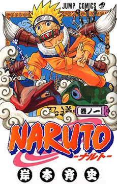

Popular Anime
Naruto
Naruto Uzumaki, a hyperactive and knuckle-headed ninja, lives in Konohagakure, the Hidden Leaf village. Moments prior to his birth, a huge demon known as the Kyuubi, the Nine-tailed Fox, attacked Konohagakure and wreaked havoc. In order
to put an end to the Kyuubi's rampage, the leader of the village, the 4th Hokage, sacrificed his life and sealed the monstrous beast inside the newborn Naruto.
Bleach
15-year-old Kurosaki Ichigo is not your everyday high school student. He has from as far he can remember always had the ability to see ghosts and spirits. A fateful day arrives as Ichigo encounters the shinigami Kuchiki Rukia, who saves
him and his family from a Hollow at the cost of injuring herself. During this encounter, with Rukia unable to defeat the hollow she transfers her shinigami powers into Ichigo. In the aftermath, unable to continue with her job, Rukia allows
Ichigo to take on the role of a shinigami in her place as they together defeat the Hollows plaguing Ichigo's town.
Fairy Tail
Set in an imaginary world, the Earth Land, there exists a Mage Guild called "Fairy Tail". Fairy Tail is stationed in the town Magnolia, residing in the Kingdom of Fiore, and is currently governed by Makarov, Guild's master. Lucy Heartfilia,
a 17-year-old girl, wishes to become a full-fledged mage and join one of the most prestigious Mage Guilds in the world, Fairy Tail. One day, out of pure coincidence, she meets Natsu Dragneel, a boy who is transportation-sick, but very
cheerful in nature. However, the thing she does not know is that Natsu is the closest connection to Fairy Tail, as he is a Mage in Fairy Tail.
|